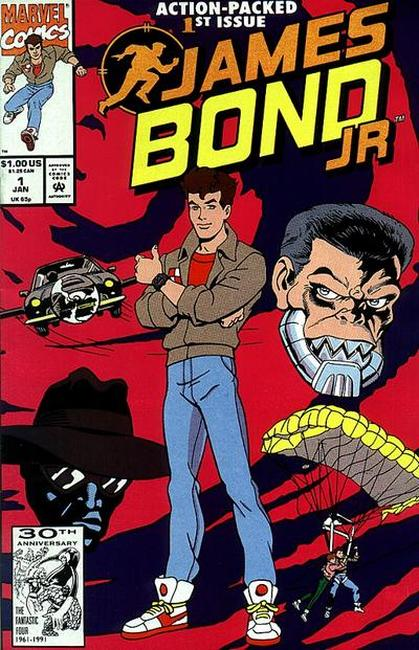

While revolving around the nephew of James Bond, no surviving relatives are mentioned in Fleming's novels, although he unknowingly conceives a child with the former Japanese film actress Kissy Suzuki in You Only Live Twice.
The idea of Bond having a nephew was used again in 1991 in an American animated series for television, in which the title character defeats threats to ensure the safety of the free world. The series was mildly successful, spawning a six-volume novelization series by John Peel (writing as John Vincent), a 12-issue comic book series by Marvel Comics published in 1992, and video games for the Nintendo Entertainment System and Super NES.

Series: 12 issue TV adaptation 1992
Publisher: Marvel
Written by T. Pederson, F. Moss, Cal Hamilton
Illustrations by Mario Capaldi, Colin Fawcett
The Beginning
007's nephew arrives at Warfield Academy where he becomes the target of S.C.U.M. agents after his Aston Martin. Based on the TV episode of the same title aired Sept 30, 1991. Decent idea, horribly executed, ripe for a good team to do over.